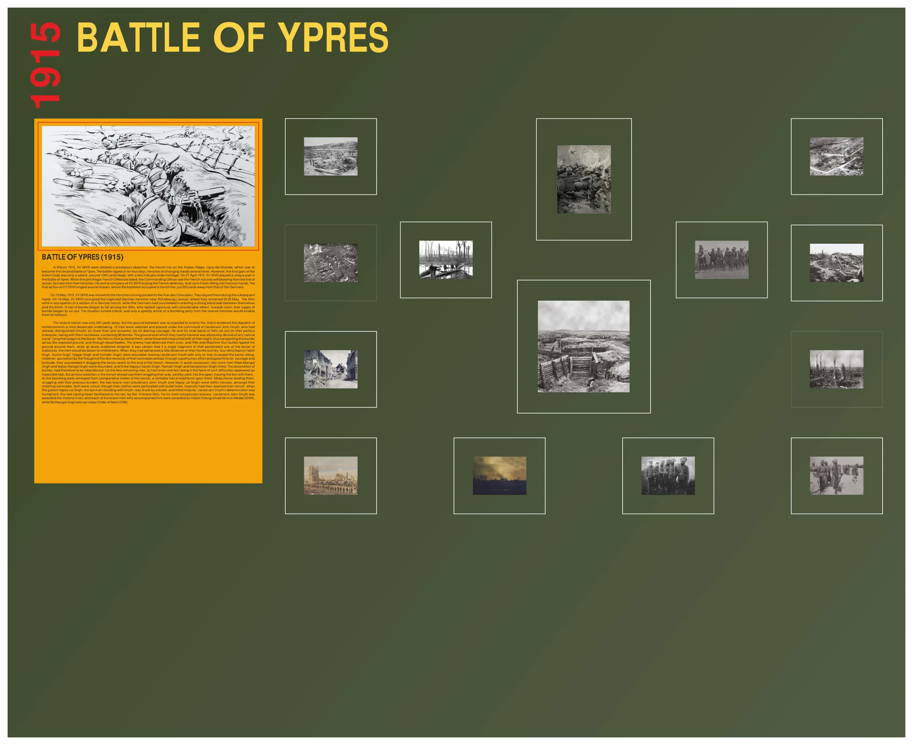

Battle of Ypres (1915)

BATTLE GALLERY PICTURES


Category: Battle Gallery
Regiment: Sikh Regiment
In March 1915, XV SIKHS were allotted a prestigious objective. The trench line on the Aubers Ridge, Ligny-de-Grande, which was to become the Second Battle of Ypres. The battle raged on for four days, trenches exchanging hands several times. However, the final gain of the entire Corps was only a salient, around 1000 yards deep, with a two mile plus wide frontage. On 27 April 1915, XV SIKHS played a unique part in the Battle of Ypres. When the joint Anglo-French Offensive failed, the Commanding Officer saw the French not only withdrawing from the line of action, but also from their trenches. He sent a company of XV SIKHS to plug the French defences, and save it from falling into German hands. The final action of XV SIKHS hinged around Aubers, where the battalion occupied a trench line, just 200 yards away from that of the Germans.
On 16 May 1915, XV SIKHS was moved to the trenches running parallel to the Rue-des-Chevaliers. They stayed there during the subsequent nights. On 18 May, XV SIKHS occupied the captured German trenches near Richebourg L’Avoue, where they remained till 20 May. The Sikhs were in occupation of a section of a German trench, while the Germans had succeeded in erecting a strong barricade between themselves and the British. A hail of bombs began to fall among the Sikhs, who replied vigorously with considerable effect. Towards noon, their supply of bombs began to run out. The situation turned critical, and only a speedy arrival of a bombing party from the reserve trenches would enable them to hold out.
The reserve trench was only 250 yards away. But the ground between was so exposed to enemy fire, that it rendered the dispatch of reinforcements a most desperate undertaking. 10 men were selected and placed under the command of Lieutenant John Smyth, who had already distinguished himself, on more than one occasion, by his dashing courage. He and his small band of Sikhs set out on their perilous enterprise, taking with them two boxes, containing 96 bombs. The ground over which they had to traverse was absolutely devoid of any natural cover. Tying their pagris to the boxes, the Sikhs in front pulled at them, while those behind pushed with all their might, thus transporting the bombs across the exposed ground, and through dead bodies. The enemy had observed them cross, and Rifle and Machine Gun bullets ripped the ground around them, while air bursts scattered shrapnel. It was certain that if a single fragment of shell penetrated one of the boxes of explosives, the men would be blown to smithereens.
When they had advanced a little distance on their horrific journey, four Sikhs—Sepoys Fateh Singh, Sucha Singh, Ujagar Singh and Surinder Singh—were wounded, leaving Lieutenant Smyth with only six men to propel the boxes along. However, spurred on by the thought of the dire necessity of their comrades ahead, through superhuman effort and good fortune, courage and fortitude, they succeeded in dragging the boxes nearly to the end of the trench.
However, in quick succession, two more men—Naik Mangal Singh and Sepoy Ganga Singh—were wounded, and three Sepoys—Saran Singh, Haram Singh and Sampooran Singh—killed. The second box of bombs, had therefore to be abandoned. For the two remaining men, to haul even one box along in the face of such difficulties appeared an impossible task. But anxious watchers in the trench ahead saw them wriggling their way, yard by yard, into the open, hauling the box with them.
As the bombing party emerged from comparative shelter of the trench, a veritable hail of lead burst upon them. Miraculously eluding them, struggling with their precious burden, the two brave men—Lieutenant John Smyth and Sepoy Lal Singh—were within minutes, amongst their cheering comrades. Both were unhurt, though their clothes were perforated with bullet holes. Scarcely had they reached their trench, when the gallant Sepoy Lal Singh, the last man standing with Smyth, was struck by a bullet, and killed instantly.
Lieutenant Smyth’s determination was triumphant, the task having been facilitated to the last, by the 10 brave Sikhs. For his most conspicuous bravery, Lieutenant John Smyth was awarded the Victoria Cross, and each of the brave men who accompanied him were awarded an Indian Distinguished Service Medal (IDSM), while Nk Mangal Singh won an Indian Order of Merit (IOM).

Open on Mobile
Scan to view this art record in Chrome on your phone.